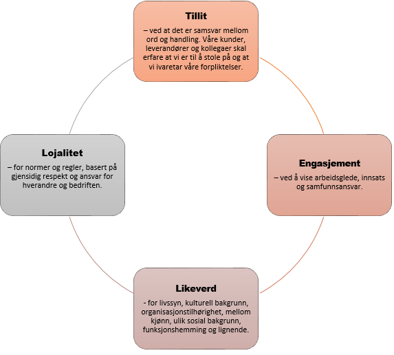

Etiske normer

På sosiale medier kan vi fremstille oss sjølv korleis ein skal vere. Vi får dermed større kontroll i kommunikasjonen. Nokon kan for eksempel framstille seg sjølv som anonym og det er viktig å ha god oppførsel. Endringane fra tida før og nå er svært store, og verda blir meir teknisk. |